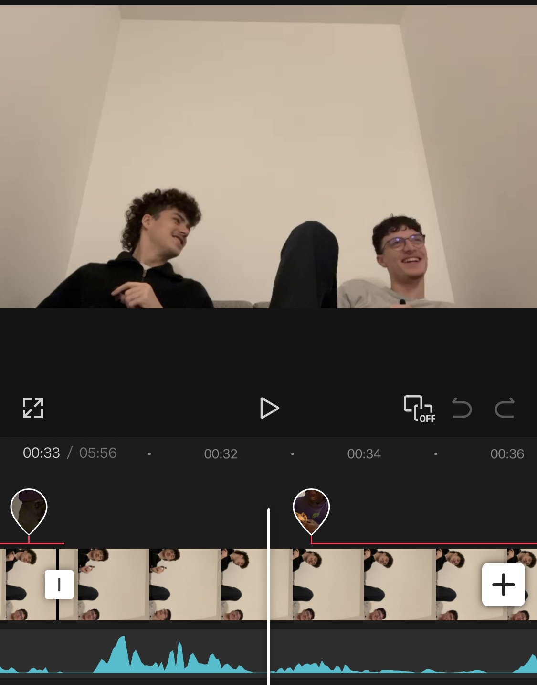
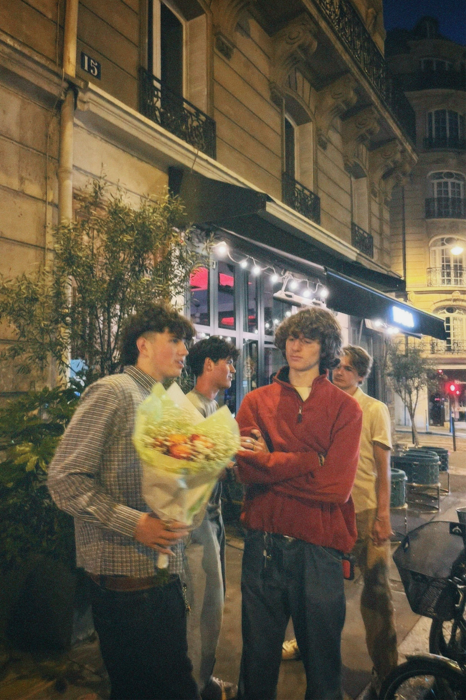
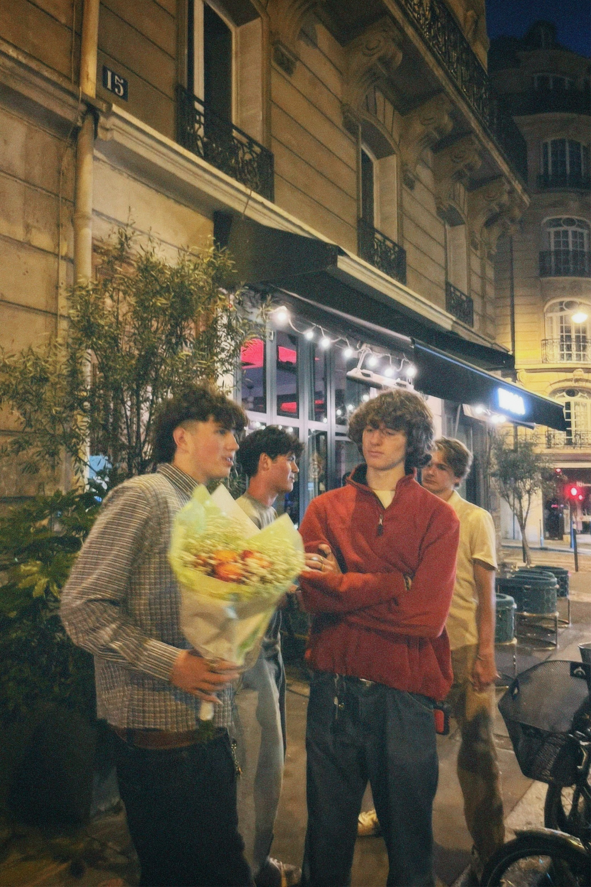
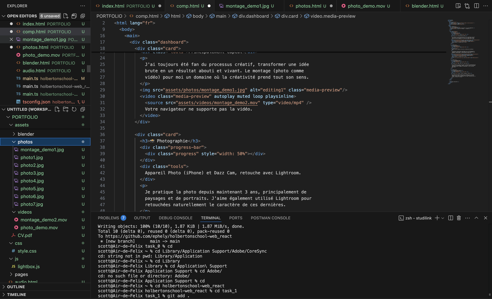

🎬 Montage Vidéo
Le montage (photo et vidéo) est pour moi un domaine où la créativité prend tout sens. Transformer une idée brute en un résultat abouti et vivant est un processus que je maîtrise particulièrement.
📸 Photographie
Je pratique la photo depuis maintenant 3 ans, principalement de paysages et de portraits. Mon travail porte principalement sur des paysages et des portraits. J’ai également une excellente maîtrise d’Adobe Lightroom.
 

💻 Développement Web
J'ai découvert le code en 1ère avec la spécialité NSI (Numérique et Science de l'Informatique). Depuis, je me suis construit une bonne base dans plusieurs langages et technologies, que je continue à approfondir.
📱 Communication Visuelle
Je suis captivé par la création de contenu visuel pour les réseaux sociaux. Les tendances en marketing digital me sont familières. De plus, capter l’attention du consommateur à travers un processus créatif rigoureux me passionne particulièrement.